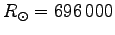
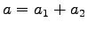
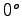
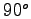

- Semi-major axis: measured in solar radii,
km. It is a sum the two absolute semi-major axes: .
- Orbital inclination: measured in degrees, with respect to the plane of the sky. If the inclination is in range  to , the binary orbits counter-clockwise as projected onto the plane of the sky, while above it orbits clockwise.